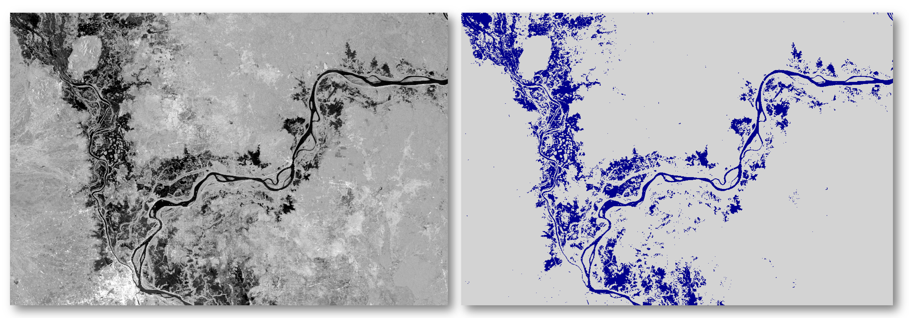

Welcome to the HYDRAFloods Documentation
The Hydrologic Remote Sensing Analysis for Floods (or HYDRAFloods) is an open source Python application for downloading, processing, and delivering surface water maps derived from remote sensing data. The basis behind the tool is to provide sensor agnostic approaches to produce surface water maps. Furthermore, there are workflows that leverage multiple remote sensing dataset in conjunction to provide daily surface water maps for flood application.
The HYDRAFloods application is built using Google Earth Engine and Google Cloud Platform (GCP) to leverage cloud computing for large-scale computations and handling high data volume outputs. The goal of the package is to allow users access to high-quality, cloud-based surface water mapping algorithms with minimal effort. To achieve this goal, hydrafloods provides a high-level API on top of the Earth Engine Python API to reduce code duplication, such as filtering or carrying metadata for image processing, and provide complex surface water algorithms. Furthermore, the package provides some GCP functionality to read and transfer data to be used within Earth Engine.
Quick Start
To highlight a quick example of the hydrafloods API and simplicity to produce high-quality surface water maps we provide a quick example of mapping surface water using Sentinel-1 over the confluence of the Mekong and Tonle Sap rivers in Cambodia, which experiences frequent flooding.
# content of example.py Python file
# import the hydrafloods and ee package
import hydrafloods as hf
import ee
ee.Initialize()
# specify start and end time as well as geographic region to process
start_time = "2019-10-05"
end_time = "2019-10-06"
region = ee.Geometry.Rectangle([104, 11.5, 106, 12.5 ])
# get the Sentinel-1 collection
# the hf.dataset classes performs the spatial-temporal filtering for you
s1 = hf.datasets.Sentinel1(region, start_time, end_time)
# apply a water mapping function to the S1 dataset
# this applies the "Edge Otsu" algorithm from https://doi.org/10.3390/rs12152469
water_imgs = s1.apply_func(
hf.thresholding.edge_otsu,
initial_threshold=-14,
edge_buffer=300
)
# take the mode from multiple images
# since this is just imagery from one day, it will simply mosaic the images
water_map = ee.Image(water_imgs.collection.mode())
# export the water map
hf.geeutils.export_image(
water_map,
region,
"users/<YOUR_USERNAME>/water_map_example",
scale=30,
)
(This script is complete, it should run "as is")
At the end of the script execution, there will be an Earth Engine export task running the process on the EE servers for use later in the EE platform. The resulting surface water image should look like the following figure. It should be noted that hydrafloods can scale quickly and easily by simply changing the start or end time and region to process, allowing for processing of surface water maps with minimal effort in terms of coding.

Figure 1. Sentinel-1 backscatter image (left) and resulting surface water map (right) from 2019-10-05 for a region in Cambodia as in the example.
Learn more about how to use the package for processing see Getting Start in the docs.
Get in touch
- Report bugs, suggest features or view the source code on GitHub.
- Contact us through a Technical Assistance Request and mention "hydrafloods"
Contribute
Contributions are welcome, and they are greatly appreciated! Every little bit helps, and credit will always be given. Please see the Contributing Guidelines for details on where to contribute and how to get started.
License
hydrafloods is available under the open source GNU General Public License v3.0.